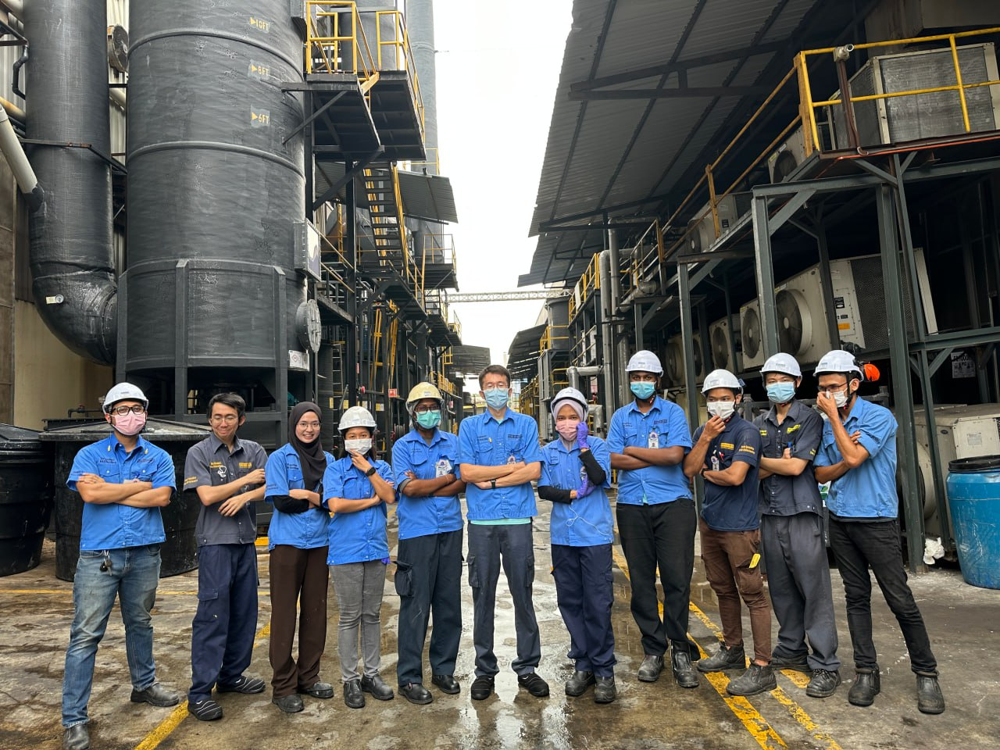
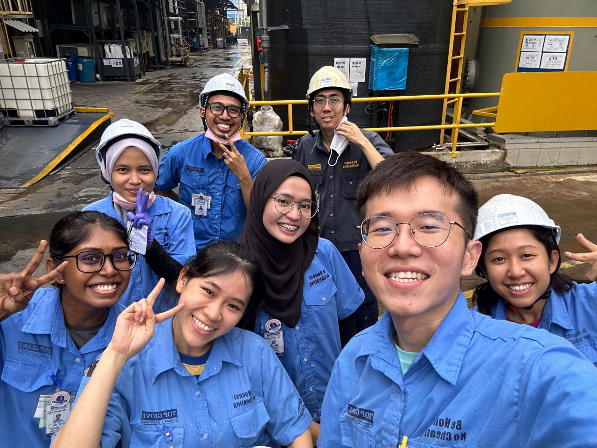
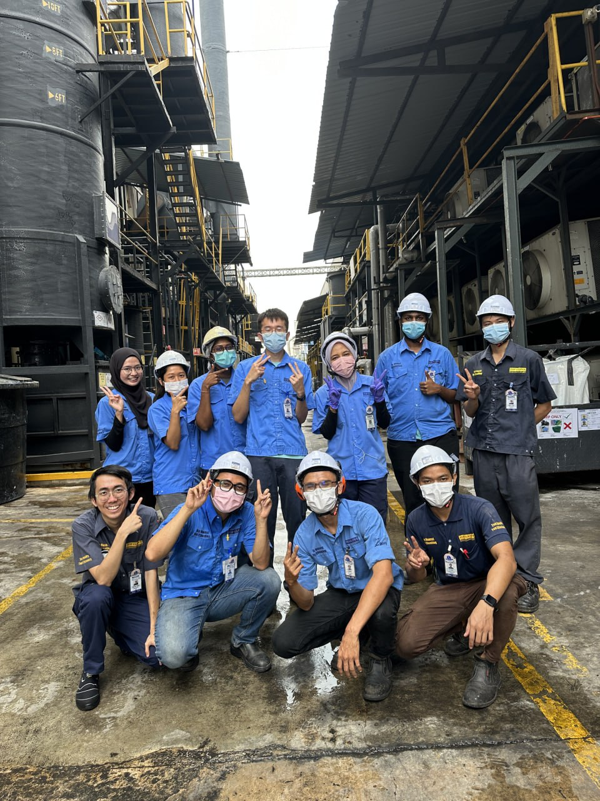

Automation Engineer and Head of Reaseach and Development
Top Glove Corporation
Sep 2020 - October 2022 (2 years and 1 month)
Challenges and Action Taken
- Challenges 1: Understanding Production Practices
- Action Taken: Deep understanding of the production practices and preferences. Example CN sensor Project.
- Action Taken: Take time to monitor production practices
- Challenges 2: Change Management
- Action Taken: Be patience to explain to new management team on your decision, collect data to proof your decision
- Action Taken: Work independent and interdependent, maintaing good relationship with colleague is important
- Challenges 3: Bottleneck Analysis and Solutions
- Action Taken: Collaborate with different departments, list out all the possible root causes and investigate it accordingly


